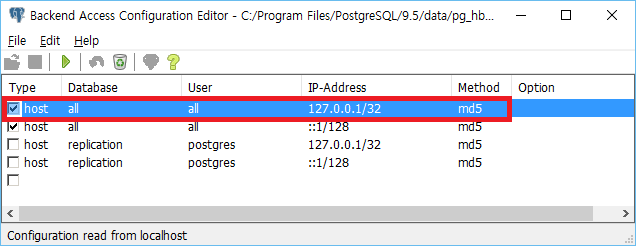
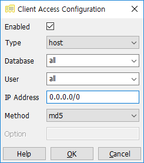
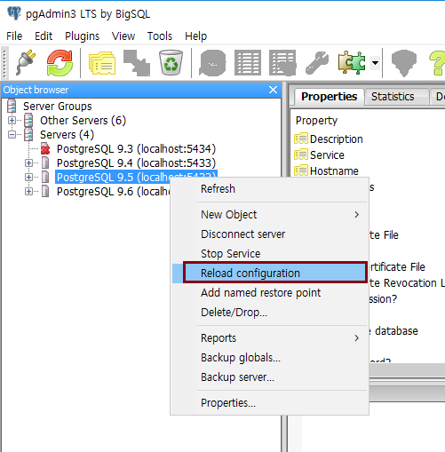

설치 및 설정 변경
pg_hba.conf 파일
pg_hba.conf 파일로 다음과 같은 작업을 할 수 있다.
-
pg_hba.conf 파일은 postgres 데이터베이스에 접속할 수 있는 사용자를 제한할 수 있는 파일이다.
-
사용자별로 접속할 수 있는 데이터베이스, 허용 IP 를 설정할 수 있다.
pg_hba.conf 수정 방법
특정 IP 제한없이 접속하는 모든 사용자에게 모든 데이터베이스를 접속할 수 있게 설정해보자.
-
pgAdmin3 > File > Open pg_hba.conf 선택 > 경로 찾아서 pg_hba.conf 선택

-
Type 은 host 로 변경하고, IP Address 에 0.0.0.0/0 을 입력한다. (모든 IP 허용, TCP v4 v6 허용한다는 뜻)

-
Reload configuration 후 다른 시스템에서 접속해 보자.

필드 의미
Type
방식
-
local: Unix-domain 소켓을 사용한 연결 방식
-
host: TCP/IP 사용한 연결 방식
-
hostssl: TCP/IP 사용한 연결 방식이지만 SSL 암호화로 연결하는 방식
-
hostnossl: hostssl 와 반대. SSL 을 사용하지 않는 TCP/IP 만 연결하는 방식
Database
지정된 데이터베이스만 접근 가능
User
지정된 사용자만 접근 가능
IP-Address
지정된 IP 만 허용 (아래는 사용 예)
-
172.20.143.89/32: single hos
-
172.20.143.0/24: small network
-
10.6.0.0/16: larger one
-
fe80::7a31:c1ff:0000:0000/96: small network
-
0.0.0.0/0: represents all IPv4 addresses
Method
인증 방법
-
trust: 무조건 허용. 비밀번호 없이 접속 가능
-
md5: 클라이언트에서 double-MD5-hashed 기능이 지원되어야 함
-
password: 클라이언트에서 암호화되지 않은 비밀번호로 접속하려고 할 때
-
ident: 클라이언트의 os 사용자로 데이터베이스 사용자 이름과 일치하는지 확인하여 접속하는 방식. local 에서 접속 시, peer 인증을 대신 사용해야 함
-
peer: 클라이언트의 os 사용자로 데이터베이스 사용자 이름과 일치하는지 확인하여 접속하는 방식
Let's Prcactice
-
특정 IP 에서 접속하는 사용자만 허용하도록 설정해보자.
-
리눅스에서 pg_hba.conf 파일을 수정해 보자.
처음으로
이전
다음